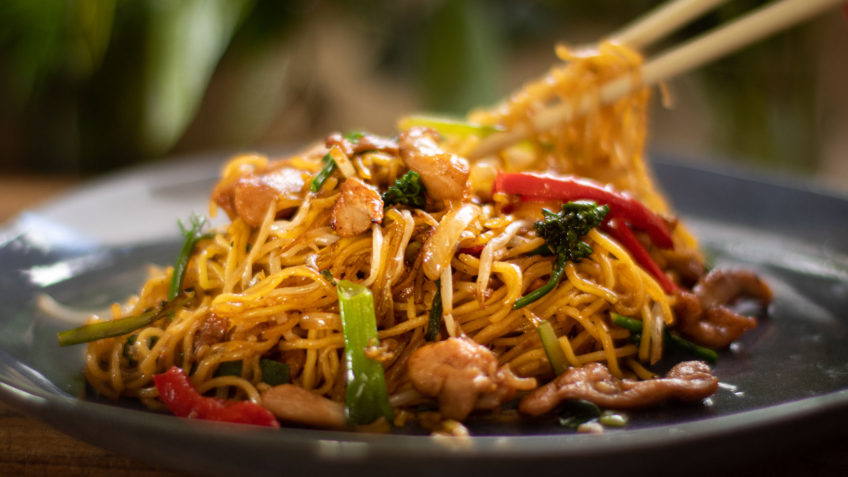

Chow mein

Chinese style noodles
This is a world famous and much loved noodle recipe, there are many variations but keeping it simple this is a basic version that is sure to please all!
Ingredients you'll need
- 200g Medium egg noodles
- 150g Beansprouts
- 1 White onion
- 50g Spring onions
- Oyster sauce
- Light soy sauce
- Dark soy sauce
- Vegetable oil
- Seseme oil
- Brown sugar
- Salt and pepper
How to prepare
- Take one tablespoon of light soy sauce, oyster sauce and dark soy sauce and mix in a cup or container add one tablespoon of water and a tablespoon of the brown sugar and mix until sugar is disolved, set aside.
- Gentley preheat a pan with oil while slicing your onion (half is usually enough for 2) star frying these until turning in colour or softening.
- Cut spring onions to about an inch long and add to the browning white onion in the pan once softened remove from heat and place vegetables in a bowel for later.
- Boil some water and soak your noodles until soft and ready for frying (if using fresh noodles skip this step).
- Drain noodles and begin frying them in the pan, this is the time to add the beansprouts as they cook very quickly.
- As the beansprouts cook, re-add the prefried vegetables back into the pan with the noodles and prour in your premade sauce.
- Mix until fully incorperated, salt and pepper to taste and bon appetie its ready to serve, I prefer mine with chopsticks!